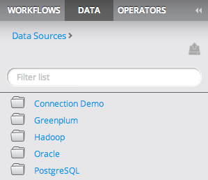
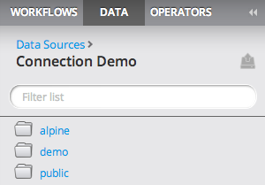
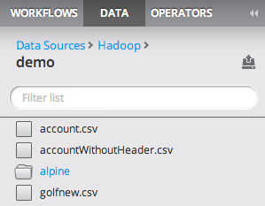
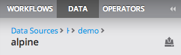

Data Source Explorer
Users with the modeler role can explore the data available in all of their 'Personal' data sources.
- Navigating to the Data tab of the Explorer, the user will see a list of each 'Personal' data source.

- Clicking on the name of a data source will navigate to the first level of the data source.
- For database type sources, the second level is the schema level. Clicking on a schema link will navigate to the table/view level. At
the table/view level, the user can drag and drop tables/views from the explorer to an open workflow.

- For Hadoop type sources, the explorer will navigate the folder hierarchy of hdfs. At each level, a blue link represents a folder and a gray
link represents a Hadoop file. Click a folder to view the contents of the directory or drag and drop a Hadoop file to an open workflow.

- The header above the listing displays the current level name. The user can navigate back by using the breadcrumb control above the level name.
THe breadcrumb will collapse as the hierarchy grows. Hover over the breadcrumb to expand the path.
